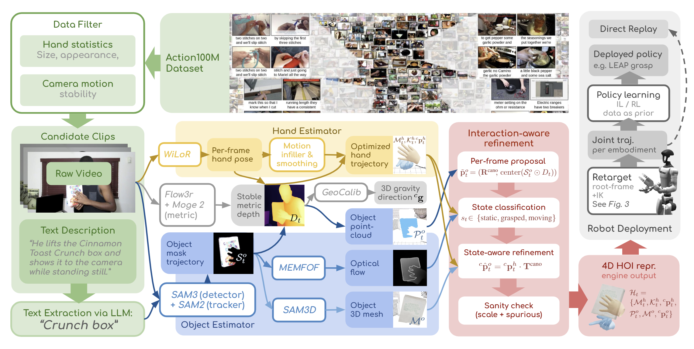
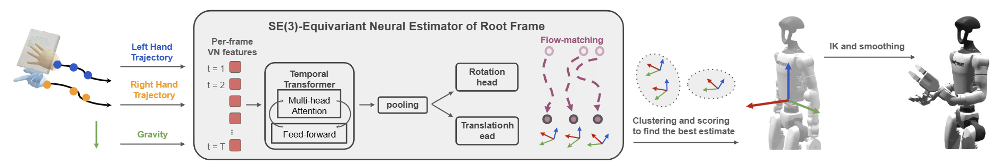

Internet videos are the largest reservoir of embodied human manipulation knowledge, yet converting arbitrary RGB footage into actionable robot training data remains a major bottleneck. Lab- and factory-collected datasets are narrow in scale and diversity, limiting open-world robot learning.
Instead of releasing a static dataset, we introduce EgoInfinity, a universal 4D hand-object interaction data engine for web-scale data generation. It is a modular engine that integrates perception, segmentation, reconstruction, interaction-aware refinement, and retargeting to automate the video-to-action problem with no human-in-the-loop annotation, and it keeps improving as any one component is upgraded.
EgoInfinity lifts in-the-wild human manipulation videos into agent-agnostic, metric 4D representations: hand trajectories, 6-DoF object poses, and contact-relevant states. Rather than naively connecting standalone components, it combines cross-module metric calibration with interaction-aware refinement to reduce the drift and contact inconsistency common in pure visual reconstruction. A novel functional retargeter then compiles the recovered 3D hand motion into executable joint trajectories for diverse robot morphologies, enabling video-to-action transfer on any robot from arbitrary viewpoints and shot sizes, even when the human body is only partially visible. We validate EgoInfinity across perception fidelity, kinematic feasibility, contact consistency, cross-embodiment generalization, and real-robot skill acquisition (grasping, cutting, wiping, and pouring).
Scale is currently bounded by Action100M (14.6 years of footage across 147M action segments); the engine itself is corpus-agnostic. The interactive demo hosts a curated subset of 106 processed clips.
A modular pipeline that lifts monocular RGB video into a metric, agent-agnostic 4D hand-object representation.

A lightweight two-pass strategy keeps web-scale processing tractable. Pass 1 scans for hand-present segments and filters clips by hand-motion statistics and camera-motion stability. Pass 2 runs the full reconstruction stack only on the retained active segments. EgoInfinity currently targets approximately static-camera footage, common in tutorial and how-to content.
Hand and object predictions come from different models and are not inherently aligned in scale or reference frame. EgoInfinity calibrates them into a shared metric camera frame, then refines object motion using detected interaction states. Each frame is classified as static, grasped, or moving (a finer six-state label is used internally): a grasped object is rigidly bound to the hand frame, a static object is locked to its robust point-cloud centroid, and a moving object keeps its smoothed per-frame proposal. Lightweight sanity checks suppress implausible scales and flag spurious background detections. This is what cuts the drift and contact inconsistency seen in pure visual tracking.
The engine output is a metric, agent-agnostic 4D hand-object interaction state, scrubbable along the timeline and ready for downstream retargeting and learning:
The exo-to-ego conversion is a rigid reframing of the recovered 3D scene, not a 2D generative translation, so it never hallucinates pixels. A virtual ego camera is placed above the bilateral hand midpoint, its up-axis set to the gravity vector and aimed at the interaction region, following it frame by frame. Source clips that share no common capture viewpoint are thus unified into a consistent egocentric observation while metric geometry and contact are preserved exactly.
Functional transfer: preserve task-relevant hand motion within a robot's constraints, without copying human arm or body kinematics.

Arbitrary internet videos often show only the hands, partial arms, or changing viewpoints, so exact body-pose recovery is unreliable. Instead of imitating kinematics, EgoInfinity estimates a feasible robot-specific root transformation and preserves task-relevant hand motion within the target robot's limits.
A SE(3)-equivariant estimator built from Vector Neuron layers predicts the root frame so that rigidly transforming the input transforms the prediction accordingly. It is formulated as a flow-matching generator over plausible root frames, capturing the ambiguity of partial-body observations, and is trained entirely in MuJoCo simulation per robot (about 1.5 to 2 hours each on a single RTX 3060), with augmentations for tracking noise, occlusion, gravity dropout, and rear-facing cameras.
At inference, sliding-window hypotheses are clustered into K=5 representative candidates under an SE(3) geodesic metric, then scored by IK convergence, residual tracking error, manipulability, joint-limit margin, and smoothness. The best candidate anchors a smoothed per-frame root trajectory; arm joints follow wrist-level IK targets while finger joints are mapped directly from MANO keypoints for dexterous hands.
For each robot, the retargeter estimates a root transformation and solves IK to convert recovered 3D hand motion into executable joint trajectories under the robot's kinematic constraints. Dataset-level statistics:
| Robot | IK rate | Pos. error | Ori. error | Jnt.-limit margin | Manipulability | Smoothness |
|---|---|---|---|---|---|---|
| Unitree G1 | 0.821 | 2.86 cm | 6.73° | 0.619 rad | 0.012 | 0.00693 |
| Robonaut2 | 0.774 | 6.67 cm | 8.25° | 0.134 rad | 0.058 | 0.00343 |
| Dual-Franka | 0.706 | 10.27 cm | 12.17° | 0.572 rad | 0.080 | 0.00582 |
IK rate: per-frame IK success rate. Pos. / Ori. error: mean hand position (L2, cm) and orientation (geodesic, °) between IK target and achieved pose. Jnt.-limit margin: mean minimum joint clearance (rad). Manipulability: mean index sqrt(det(J Jᵀ)). Smoothness: mean squared joint velocity. A single recovered 4D trajectory also compiles onto XLeRobot in simulation.
Retargeted motions are replayed on a real dual-arm Franka FR3, demonstrating functional execution across distinct manipulation tasks.
Beyond direct replay, EgoInfinity-extracted hand motions serve as priors to train a grasping policy on a real LEAP dexterous hand, generalizing across object shape.
@article{wang2026egoinfinity,
title = {EgoInfinity: A Web-Scale 4D Hand-Object Interaction Data Engine
for Any-View Robot Retargeting and Video-to-Action Robot Learning},
author = {Wang, Gaotian and Ren, Kejia and Morgan, Andrew and Chen, Yiting
and Qian, Howard H. and Chanrungmaneekul, Podshara and Hang, Kaiyu},
journal = {arXiv preprint arXiv:2606.17385},
year = {2026}
}
If you use these statistics, please also cite Action100M, the source corpus.